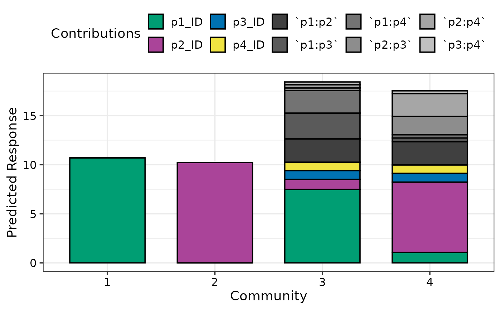
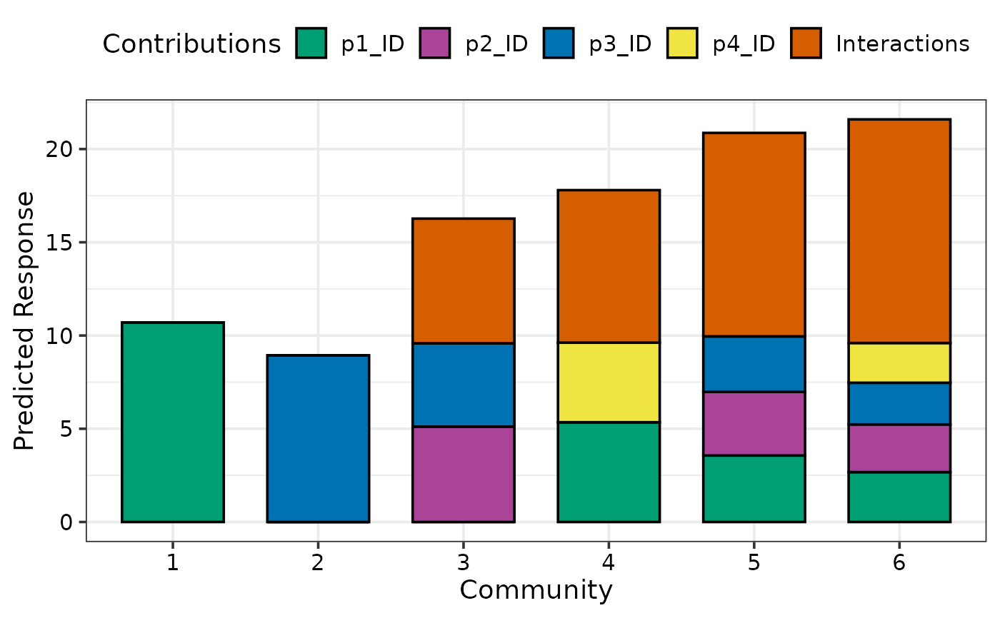
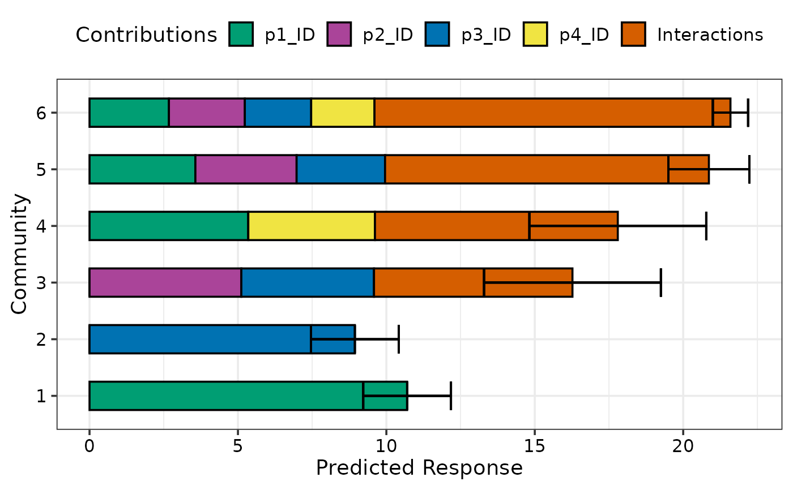
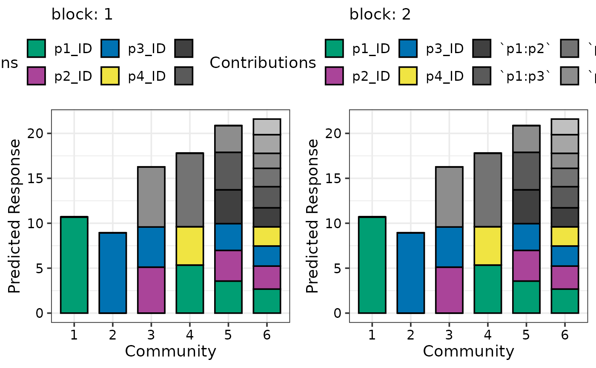
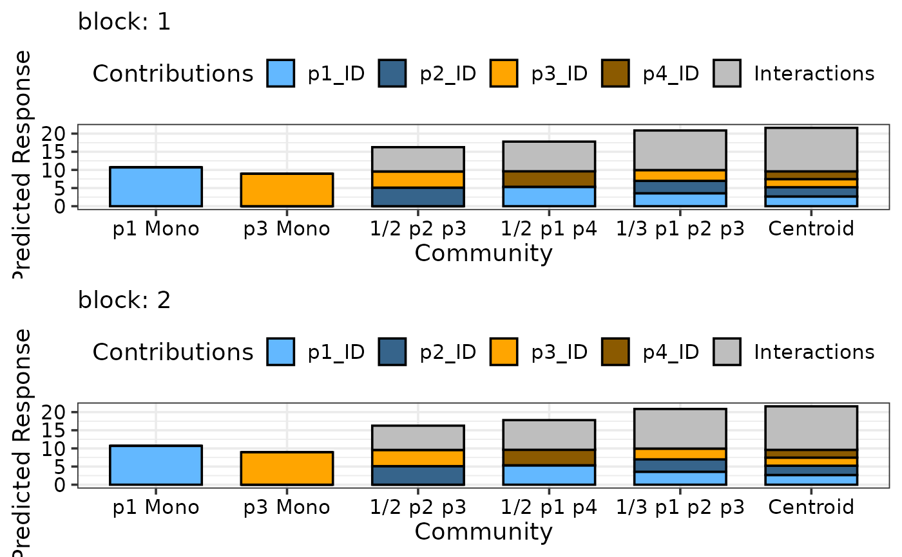

Model term contributions to predicted response
prediction_contributions.RdA stacked bar_chart is shown where the individual contributions
(parameter estimate * predictor value) for each term in a statistical model are stacked
on top of another. The total height of the stacked bar gives the value of the
predicted response. The uncertainty around the predicted response can also be shown
on the plot.
This is a wrapper function specifically designed for statistical models fit using the
DI() function from the
DImodels R package and it implicitly
calls prediction_contributions_data followed by
prediction_contributions_plot. If your model object isn't fit using
DImodels, the associated data and plot functions can instead be called manually.
Usage
prediction_contributions(
model,
data = NULL,
add_var = list(),
groups = list(),
conf.level = 0.95,
bar_labs = rownames(data),
colours = NULL,
se = FALSE,
FG = NULL,
interval = c("confidence", "prediction", "none"),
bar_orientation = c("vertical", "horizontal"),
facet_var = NULL,
plot = TRUE,
nrow = 0,
ncol = 0
)Arguments
- model
A Diversity Interactions model object fit by using the
DI()function from theDImodelspackage.- data
A user-defined data-frame containing values for compositional variables along with any additional variables that the user wishes to predict for. If left blank, a selection of observations (2 from each level of richness) from the original data used to fit the model would be selected.
- add_var
A list specifying values for additional predictor variables in the model independent of the compositional predictor variables. This could be useful for comparing the predictions across different values for a non-compositional variable. If specified as a list, it will be expanded to show a plot for each unique combination of values specified, while if specified as a data-frame, one plot would be generated for each row in the data and they will be arranged in a grid according to the value specified in `nrow` and `ncol`.
- groups
A list specifying groupings to arrange coefficients into. The coefficients within a group will be added together and shown as a single component on the respective bars in the plot. This could be useful for grouping multiple similar terms into a single term for better visibility.
- conf.level
The confidence level for calculating confidence or prediction intervals.
- bar_labs
The labels to be shown for each bar in the plot. The user has three options: - By default, the row-names in the data would be used as labels for the bars. - A character string or numeric index indicating an ID column in data. - A character vector of same length as the number of rows in the data, which manually specifies the names for each bar. If none of the three options are available, the function would assign a unique ID for each bar.
- colours
A character vector specifying the colours for the contributions of the different coefficients. If not specified, a default colour-scheme would be chosen, however it might be uninformative in some situations (for examples when manual groupings are specified using `groups` parameter).
- se
A logical value indicating whether to show prediction intervals for predictions in the plot.
- FG
A higher level grouping for the compositional variables in the data. Variables belonging to the same group will be assigned with different shades of the same colour. The user can manually specify a character vector giving the group each variable belongs to. If left empty the function will try to get a grouping from the original
DImodel object.- interval
Type of interval to calculate:
- "none"
No interval to be calculated.
- "confidence" (default)
Calculate a confidence interval.
- "prediction"
Calculate a prediction interval.
- bar_orientation
One of "vertical" or "horizontal" indicating the orientation of the bars. Defaults to a vertical orientation.
- facet_var
A character string or numeric index identifying the column in the data to be used for faceting the plot into multiple panels.
- plot
A boolean variable indicating whether to create the plot or return the prepared data instead. The default `TRUE` creates the plot while `FALSE` would return the prepared data for plotting. Could be useful for if user wants to modify the data first and then call the plotting function manually.
- nrow
Number of rows in which to arrange the final plot (when `add_var` is specified).
- ncol
Number of columns in which to arrange the final plot (when `add_var` is specified).
Value
A ggmultiplot (ggplot if single plot is returned) class object or data-frame (if `plot = FALSE`)
Examples
#' ## Load DImodels package to fit the model
library(DImodels)
## Load data
data(sim2)
## Fit DI model
model1 <- DI(prop = 3:6, DImodel = 'FULL', data = sim2, y = 'response')
#> Fitted model: Separate pairwise interactions 'FULL' DImodel
## Create visualisation
## If no communities are specified 2 communities at
## each level of richness from the original data are used
prediction_contributions(model1)
#> ✔ Finished data preparation.
#> ✔ Created plot.

## Can also manually specify communities of interest
my_comms <- data.frame(p1 = c(1, 0, 0, 0.5, 1/3, 0.25),
p2 = c(0, 0, 0.5, 0, 1/3, 0.25),
p3 = c(0, 1, 0.5, 0, 1/3, 0.25),
p4 = c(0, 0, 0, 0.5, 0, 0.25))
prediction_contributions(model1, data = my_comms)
#> ✔ Finished data preparation.
#> ✔ Created plot.
## Group contributions to show as a single component on the plot
prediction_contributions(model1, data = my_comms,
groups = list("Interactions" = c("`p1:p2`", "`p1:p3`",
"`p1:p4`", "`p2:p3`",
"`p2:p4`", "`p3:p4`")))
#> ✔ Finished data preparation.
#> ✔ Created plot.

## Add a prediction interval using `se = TRUE` and show bars horizontally
prediction_contributions(model1, data = my_comms, se = TRUE,
bar_orientation = "horizontal",
groups = list("Interactions" = c("`p1:p2`", "`p1:p3`",
"`p1:p4`", "`p2:p3`",
"`p2:p4`", "`p3:p4`")))
#> ✔ Finished data preparation.
#> ✔ Created plot.

## Facet the plot on any variable
my_comms$richness <- c(1, 1, 2, 2, 3, 4)
## Use `facet_var`
prediction_contributions(model1, data = my_comms, facet_var = "richness",
bar_orientation = "horizontal",
groups = list("Interactions" = c("`p1:p2`", "`p1:p3`",
"`p1:p4`", "`p2:p3`",
"`p2:p4`", "`p3:p4`")))
#> ✔ Finished data preparation.
#> ✔ Created plot.
## Can also add additional variables independent of the simplex design
## to get a separate plot for unique combination of the variables
prediction_contributions(model1, data = my_comms,
add_var = list("block" = factor(c(1, 2),
levels = c(1, 2, 3, 4))))
#> ✔ Finished data preparation.
#> ✔ Created all plots.

## Manually specify colours and bar labels
## Model has 10 terms but we grouped 6 of them into 1 term,
## so we need to specify 5 colours (4 ungrouped terms + 1 grouped term)
## Bar labels can be specified using `bar_labs`
## Also, using nrow to arrange plots in rows
prediction_contributions(model1, data = my_comms,
colours = c("steelblue1", "steelblue4",
"orange", "orange4",
"grey"),
bar_labs = c("p1 Mono", "p3 Mono", "1/2 p2 p3",
"1/2 p1 p4", "1/3 p1 p2 p3", "Centroid"),
add_var = list("block" = factor(c(1, 2),
levels = c(1, 2, 3, 4))),
nrow = 2,
groups = list("Interactions" = c("`p1:p2`", "`p1:p3`",
"`p1:p4`", "`p2:p3`",
"`p2:p4`", "`p3:p4`")))
#> ✔ Finished data preparation.
#> ✔ Created all plots.

## Specify `plot = FALSE` to not create the plot but return the prepared data
head(prediction_contributions(model1, data = my_comms, plot = FALSE,
facet_var = "richness",
bar_orientation = "horizontal"))
#> ✔ Finished data preparation.
#> # A tibble: 6 × 19
#> .x_labs .Community p1 p2 p3 p4 richness .Richness `p1:p2` `p1:p3`
#> <chr> <fct> <dbl> <dbl> <dbl> <dbl> <dbl> <dbl> <dbl> <dbl>
#> 1 1 Community 1 1 0 0 0 1 1 0 0
#> 2 1 Community 1 1 0 0 0 1 1 0 0
#> 3 1 Community 1 1 0 0 0 1 1 0 0
#> 4 1 Community 1 1 0 0 0 1 1 0 0
#> 5 1 Community 1 1 0 0 0 1 1 0 0
#> 6 1 Community 1 1 0 0 0 1 1 0 0
#> # ℹ 9 more variables: `p1:p4` <dbl>, `p2:p3` <dbl>, `p2:p4` <dbl>,
#> # `p3:p4` <dbl>, .Pred <dbl>, .Lower <dbl>, .Upper <dbl>,
#> # .Contributions <chr>, .Value <dbl>